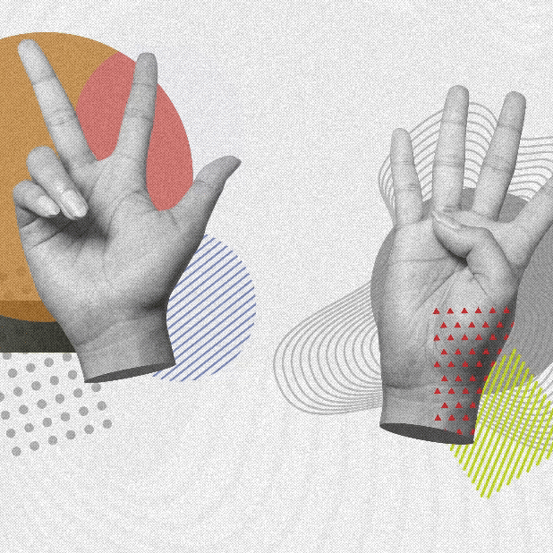

¿Qué es la Lengua de Señas Mexicana?
La Lengua de Señas Mexicana (LSM) es la lengua de señas mayoritaria de la comunidad sorda de México. Es un sistema lingüístico completo: se articula con las manos y se acompaña de movimiento corporal, expresiones faciales y mirada intencional, y cuenta con su propia gramática, vocabulario y estructura de oración, muy distinta a la del español oral. No es una traducción del español signo por signo, sino un idioma independiente con reglas propias.
- Reconocimiento oficial: declarada lengua nacional en 2003, junto con el español y las lenguas indígenas, por la Ley General para la Inclusión de las Personas con Discapacidad.
- Día Nacional de la LSM: se conmemora cada 10 de junio desde 2005.
- Comunidad: se estima que la usan alrededor de 300,000 personas en México, concentradas principalmente en la Ciudad de México, Guadalajara y Monterrey.
- Historia: sus primeros antecedentes formales datan de 1867, con la fundación de la Escuela Nacional de Sordomudos por Eduardo Huet.


Por qué es importante
Para la comunidad sorda, la LSM no es una herramienta opcional: es su lengua materna y su principal puerta de acceso al mundo.
- Acceso e inclusión: es el medio principal para la educación, la información y la vida diaria de las personas sordas.
- Derecho cultural: es un derecho lingüístico reconocido legalmente, no solo un recurso de apoyo.
- Comunicación directa: aprender aunque sea lo básico reduce la dependencia de un intérprete para interacciones cotidianas.
- Beneficio cognitivo: practicarla desarrolla memoria visual y percepción espacial en quien la aprende.
Los parámetros de una seña
Toda seña —en la LSM y en cualquier lengua de señas del mundo— combina al mismo tiempo cinco parámetros:
| Parámetro | Qué describe |
|---|---|
| Configuración manual | La forma que toman los dedos y la mano: puño, mano plana, dedos cruzados, un solo dedo extendido, etc. |
| Ubicación | En qué zona del cuerpo o del espacio se realiza la seña. Normalmente entre el pecho y el mentón. |
| Movimiento | La trayectoria que sigue la mano mientras se signa. |
| Orientación | Hacia dónde apunta la palma o los dedos. |
| Rasgos no manuales | Expresión facial, mirada y movimientos de cabeza o cuerpo. Pueden cambiar por completo el significado de una seña. |
El modelo 3D de este sitio (model2.glb) es el que realiza las señas:
reproduce estos mismos parámetros para animar cada letra. Para verlo en acción,
ve a la Práctica 3D.
Alfabeto manual (dactilológico)
El Alfabeto Dactilológico Mexicano tiene 27 señas, una por cada letra del español. En la práctica, las personas sordas lo usan principalmente para deletrear nombres propios, lugares o palabras que aún no tienen una seña asignada — no como su forma cotidiana de comunicarse.
| Letra | Cómo se forma, a grandes rasgos |
|---|---|
| A | Puño cerrado con el pulgar apoyado a un costado, ligeramente separado. |
| B | Palma abierta con los cuatro dedos juntos y extendidos; el pulgar se dobla hacia la palma. |
| C | Mano semicerrada, vista de perfil, formando la curva de la letra. |
| D · I · L | Un solo dedo extendido hacia arriba (índice, meñique o índice con pulgar abierto) mientras el resto se mantiene cerrado. |
| R | Índice y medio extendidos y cruzados entre sí. |
| V · W | Dedos extendidos y claramente separados entre sí (dos para V, tres para W). |
Para ver la fotografía real de cada seña, consulta directamente estas fuentes oficiales:
Abecedario en Lengua de Señas Mexicana
Infografía oficial con las 27 señas del alfabeto manual, ilustraciones de posición de dedos y flechas de movimiento.
Ver infografía CONAPRED · Libre Acceso A.C.Manos con Voz — Diccionario de LSM
Diccionario oficial de CONAPRED con fotografías a color y descripción de cada letra del abecedario, página por página.
Ver diccionario Gobierno CDMXDiccionario de LSM de la Ciudad de México
Diccionario elaborado por Indepedi CDMX, con el abecedario dactilológico y vocabulario adicional en fotografías.
Ver diccionarioSaludos y frases básicas
Antes de memorizar el alfabeto completo, muchos cursos de LSM recomiendan empezar por un puñado de frases de uso diario:
Un dato útil: la posición neutral para signar es a la altura del pecho, entre el hombro y el mentón — ahí es donde conviene mantener las manos mientras aprendes.
Para practicar
Aprende viendo, no solo leyendo
La mejor forma de aprender LSM es observarla y repetirla. Usa la práctica 3D para ver cómo se forma cada letra sobre el modelo de mano, a tu propio ritmo.